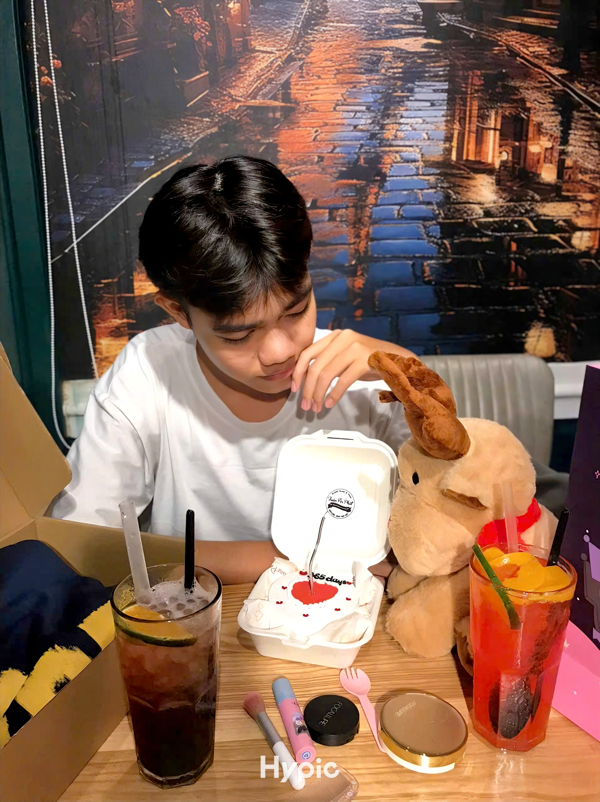
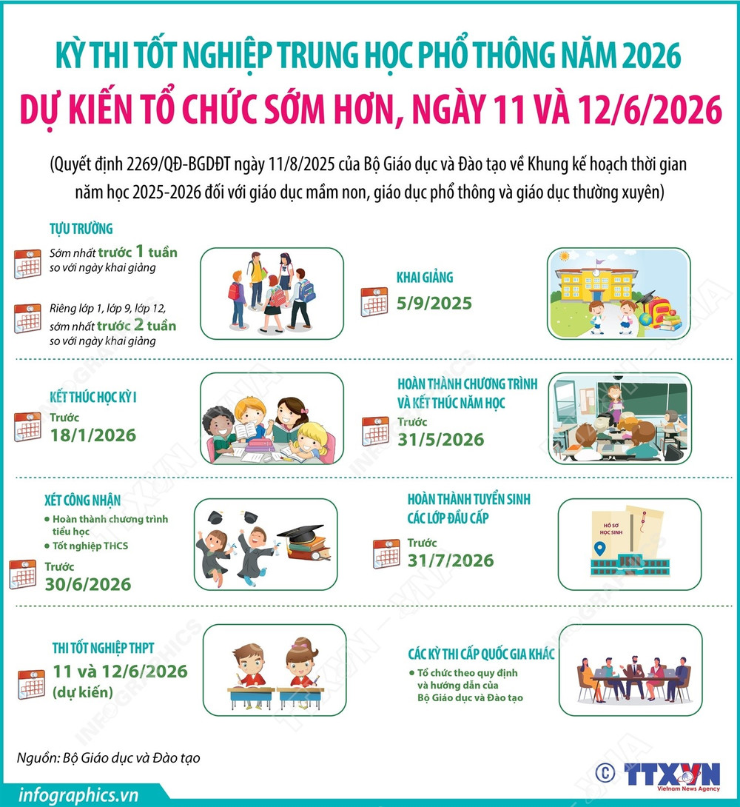

Họ và tên: Điểu Gia Bảo
Lớp: 12XH1A
Trường: THCS & THPT Việt Hoa Quang Chánh
Trường THCS & THPT Việt Hoa Quang Chánh là cơ sở giáo dục đào tạo học sinh từ cấp THCS đến THPT, chú trọng phát triển toàn diện về kiến thức, đạo đức và kỹ năng sống. Đặc biệt trường còn đào tạo tiếng Trung với phương pháp giảng dạy hiện đại và hiệu quả. Đội ngũ giáo viên giàu kinh nghiệm, tận tâm giúp học viên phát triển toàn diện các kỹ năng nghe, nói, đọc, viết. Ngoài ra, chương trình học được thiết kế phù hợp với nhiều trình độ, từ cơ bản đến nâng cao.
Địa chỉ:
Số 138 đường Hồ Thị Hương, khu phố 12,
phường Xuân An (Phường Xuân Trung cũ),
thành phố Long Khánh, tỉnh Đồng Nai.

Thời gian: 11-12/6/2026
Tại Hội nghị tổng kết công tác tổ chức Kỳ thi tốt nghiệp THPT năm 2025 và chuẩn bị Kỳ thi tốt nghiệp THPT năm 2026, Cục trưởng Cục Quản lý chất lượng Huỳnh Văn Chương đã thông tin về dự kiến công tác tổ chức Kỳ thi tốt nghiệp THPT năm 2026.
Theo dự kiến, Kỳ thi tốt nghiệp THPT năm 2026 tổ chức vào ngày 11, 12/6/2026 - sớm hơn so với các năm trước.
Kỳ thi năm 2026 giữ ổn định như năm 2025 và dự kiến có một vài điều chỉnh để bảo đảm phù hợp với mô hình quản lý chính quyền địa phương 2 cấp, đồng thời tiếp tục áp dụng công nghệ thông tin trong các khâu tổ chức thi. Các điều chỉnh dự kiến không ảnh hưởng tới thí sinh.
Cụ thể:
- Sửa đổi các quy định liên quan đến thanh tra, kiểm tra trong Kỳ thi để bảo đảm phù hợp với việc chuyển bộ phận thanh tra giáo dục các cấp về Thanh tra Chính phủ và Thanh tra tỉnh.
- Điều chỉnh lại một số quy định, quy trình tổ chức thi để bảo đảm phù hợp và thuận tiện hơn cho các đơn vị trong bối cảnh sắp xếp lại đơn vị hành chính cấp tỉnh.